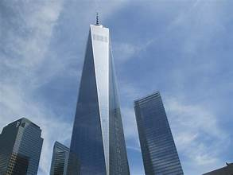

ნიკოლოზ მაღლაკელიძე,მიშო თათულაშვილი
მსოფლიო სავაჭრო ცენტრი ნიუ-იორკში აშენდა იაპონელი არქიტექტორის მინორუ იამასაკის პროექტით. გაიხსნა 1973 წლის 4 აპრილს; განადგურდა 2001 წლის 11 სექტემბრის ტერორისტული აქტის შედეგად. ცენტრის კომპლექსი შედგებოდა 7 შენობისგან, რომელთა შორის არქიტექტურულად დომინირებდა ორი ტყუპი-კოშკი, თითოეული მათგანი 110 სართულით (ჩრდ. 417, სამხ. 415 მ). მათ აგებამდე მსოფლიოში უმაღლესი შენობა იყო ემპაია სტეიტ ბილდინგი, ხოლო მათი განადგურების შემდეგ ეს უკანასკნელი ისევ გახდა უმაღლესი შენობა ქალაქ ნიუ-იორკში
ძირითადი კომპლექსი აშენდა 1966-დან 1975 წლამდე, 400 მილიონი დოლარის ღირებულებით დღევანდელობაში 3,80 მილიარდის ოდენობის. კომპლექსის შენობები დააპროექტა მინორუ იამასაკიმ. მისი არსებობის განმავლობაში მსოფლიო სავაჭრო ცენტრი სიმბოლოა გლობალიზაციასა და აშშ-ს ეკონომიკურ კეთილდღეობას, თუმცა მისი დიზაინი თავდაპირველად გააკრიტიკეს ნიუ-იორკელებმა და პროფესიონალმა კრიტიკოსებმა - "მათ ყუთები დადეს ნაცვლად. შენობები" - ტყუპი კოშკები გახდა ნიუ-იორკის ხატი. მას მთავარი როლი ჰქონდა პოპულარულ კულტურაში და ერთი შეფასებით 472 ფილმში იყო გამოსახული.
